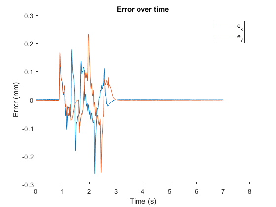

Contents
%{ The data sets for LAB 3 is now uploaded in the comment section of your prelab submission. As mentioned today, each one of you have received 2 files. The file named as "Line_Cricle" is the default trajectory of this project and the second file which includes your name has the results of your custom trajectory. Each of the mentioned files include two sets of measurements: "LLI.mat" and "PP.mat" which refer to Lead-Lag-Integrator and Pole Placement controllers, respectively. As a reminder, designing pole placement controller and analyzing its data is not mandatory. The students who did not submit their custom trajectory by the deadline today only received the Line_Circle file, and they will loose the points of Part G2. However, they can use the bonus points of pole placement part to (partially) make up for the points they lost. Instruction on the format of provided data: Each file is a structure with 5 structure fields. The data that you need for your lab report can be accessed as: Time: lli.X.Data Actual (measurement) x position: lli.Y(1).Data Actual (measurement) y position: lli.Y(2).Data Reference (command) x position: lli.Y(3).Data Reference (command) y position: lli.Y(4).Data %}
set up
name = 'lli.mat';
lli = load(name);
time = lli.lli.X.Data;
x_act = lli.lli.Y(1).Data;
y_act = lli.lli.Y(2).Data;
x_ref = lli.lli.Y(3).Data;
y_ref = lli.lli.Y(4).Data;
E1
e_x = x_ref - x_act; e_y = y_ref - y_act; clf(); hold on; plot(time, e_x); plot(time, e_y); legend('e_x', 'e_y'); title('Error over time'); xlabel('Time (s)'); ylabel('Error (mm)'); saveas(gcf, 'E1.png');